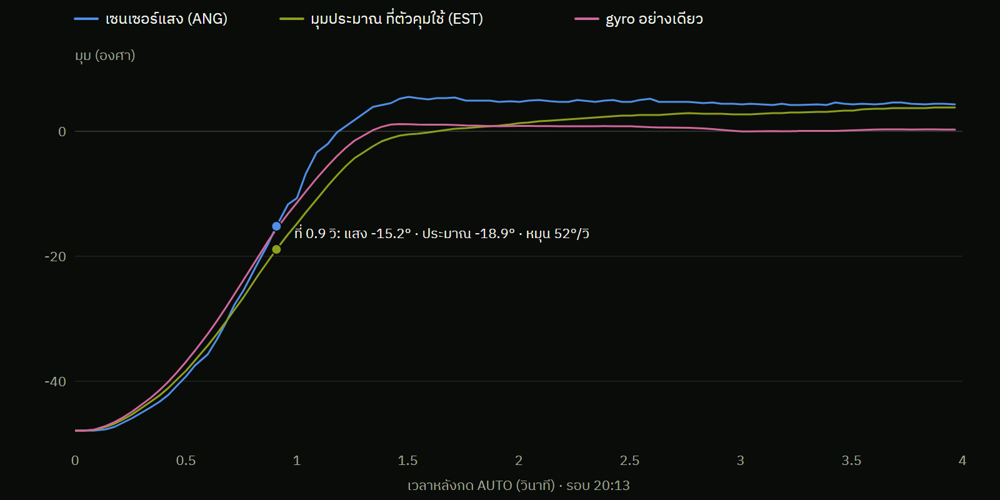

ที่เจอไม่ตรงที่คาด
ตัวกรองที่ใส่ไว้ให้ค่านิ่ง ทำให้ยานเห็นช้าไป 90 มิลลิวินาที
คาดไว้เฉลี่ยค่าแสง 10 ครั้ง มุมจะนิ่งขึ้น ตัวคุมทำงานดีขึ้น
เจอจริงที่ 0.9 วิ gyro บอก −15.6° ตรงกับแสง −15.2° แต่ตัวคุมใช้ −18.9°

10 ค่า × 20 ms
ค่าเฉลี่ยตามหลังของจริงราว 90 ms
ตัวคุมเห็น error ใหญ่เกินจริง เบรกจึงหายไปบางส่วน
แก้ (team-4): เฉลี่ย 1 ค่า
ลองบนแท่น 1 รอบ ช่วงค้างที่เป้านิ่งขึ้น ช่วงวิ่งเข้ายังไม่ต่างชัด
ข้อมูล: กล่องดำ รอบ 20:13 · เส้นชมพู = อินทิเกรตอัตราหมุนจาก gyro อย่างเดียว
08